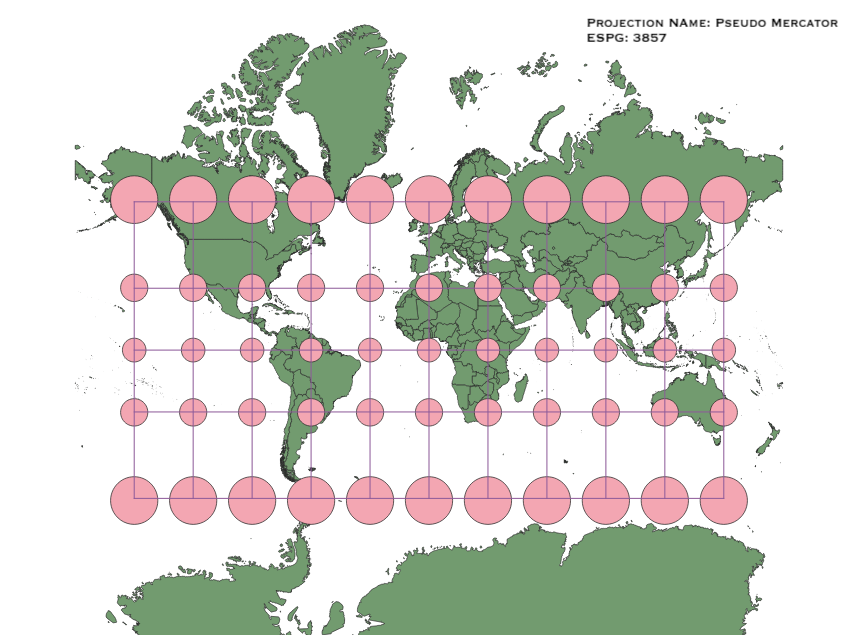
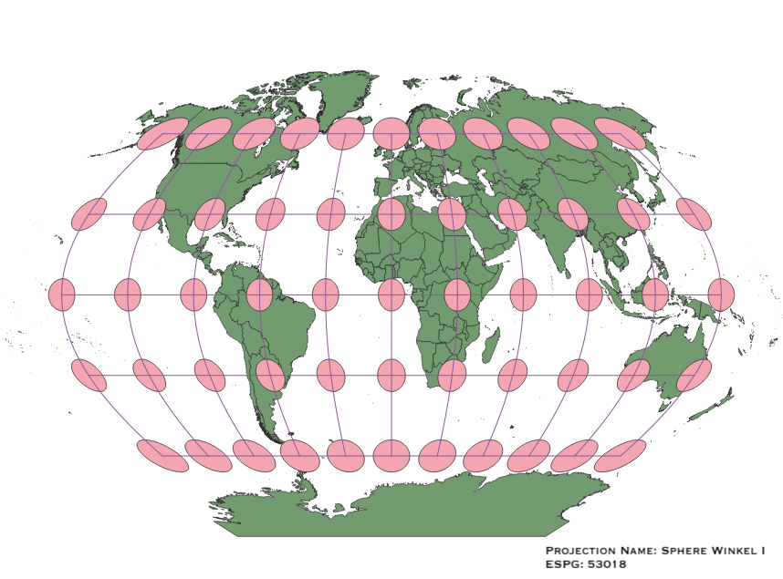
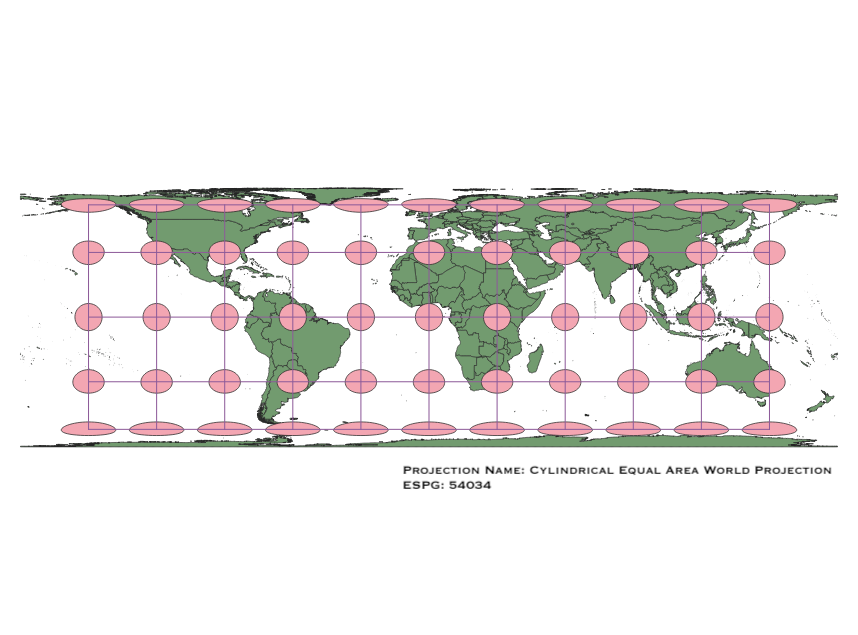
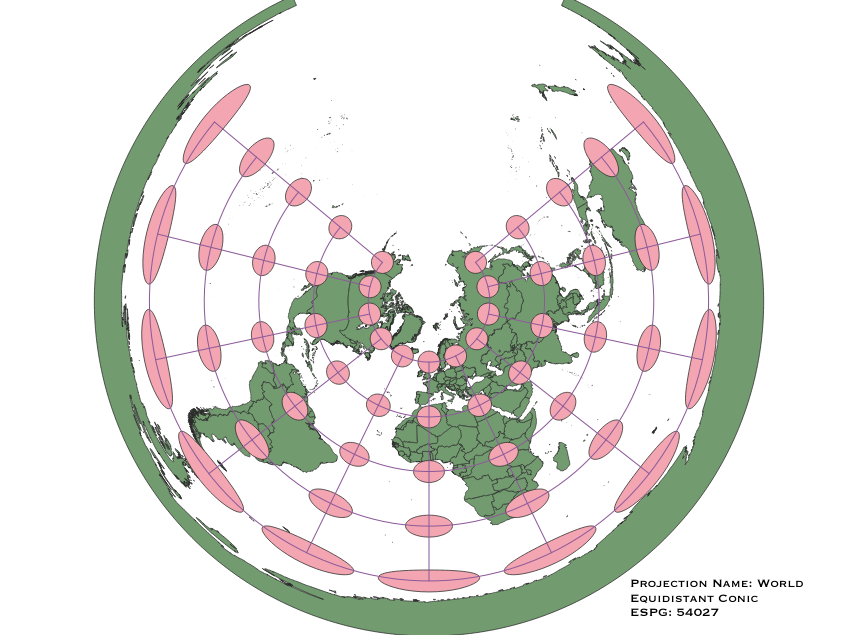
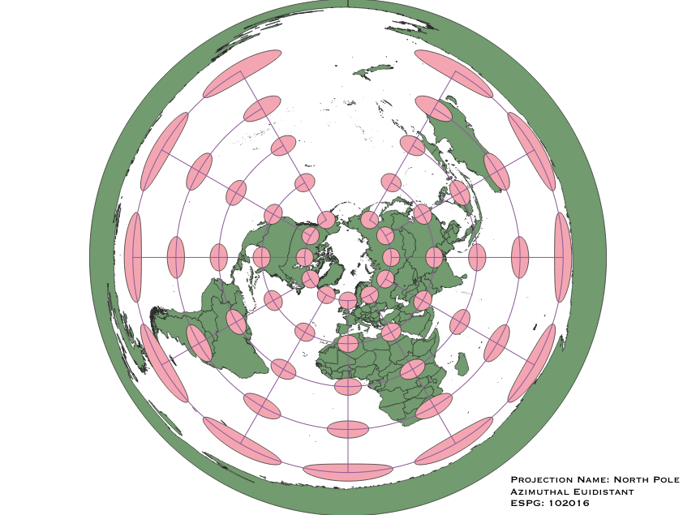
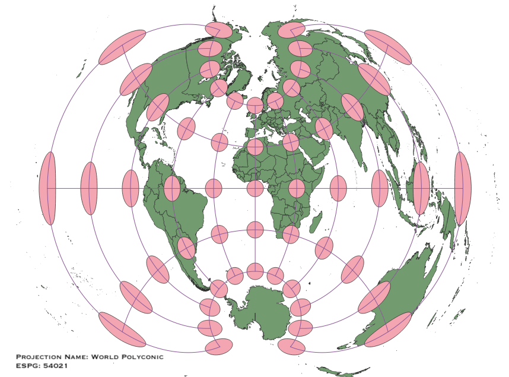
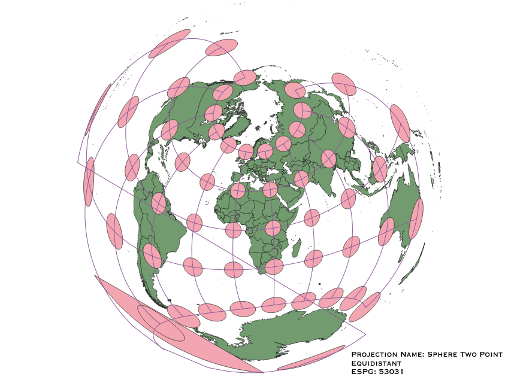

In this project I learned how to display images in different projections
Describe in your own words how you displayed the map in different projections using QGIS
You can write a paragraph here
WGS84 Projection
Standard projection

Aitoff Projection
Some observations

Pseudo Mercator Projection
Pseudo Mercator Projection is simialr to the
Mercator projection, except that the projection is done using a sphere instead of an ellipsoid.

Sphere Winkel I Projection
Some observations

Cylindrical Equal Area World Projection
Some observations

World Equidistant Conic Projection
Some observations

North Pole Azimuthal Equidistant Projection
Some observations

World Polyconic Projection
Some observations

Sphere Two Point Equidistant Projection
Some observations

Now, you should add the following projections on your own:
EPSG: 3857, 53018, 54034, 54027, 102016, and two additional projections that you choose.
Data used for this project
Download Natrual Earth 1:10m Cultural Vector